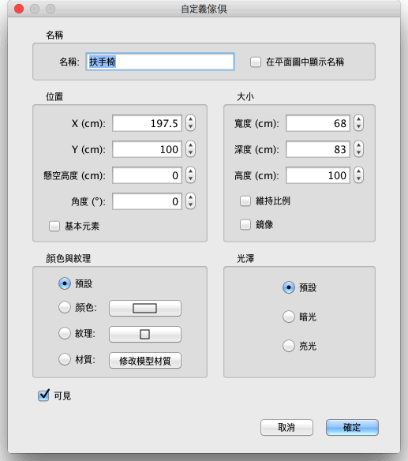
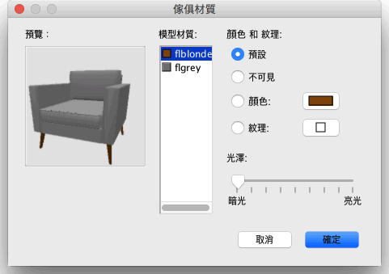

| 自訂傢俱 | |||
如果您要自訂家居模型中傢俱的位置、大小、懸空高度和角度，您既可以用滑鼠直接在平面圖中操作，也可以使用平面圖→自訂牆體... 功能表項目。 如果平面圖中只有一個傢俱被選中的話，拖曳顯示在被選物體四個角上的標示符分別可以更改傢俱的大小、懸空高度和角度。
|

|
當滑鼠指標位於這些標示符上時，其形狀會發生變化，指示您可以拖曳滑鼠更改相應的屬性。當滑鼠按鈕處於按下狀態時，滑鼠指標的旁邊會顯示出標明相對應屬性值的工具提示。 自訂傢俱的另一種途徑是使用“自訂傢俱”對話方塊，方法是在平面圖中按兩下您想要更改的傢俱，或者在選中要更改的傢俱後使用傢俱→自訂... 功能表項目。  在該對話方塊中，您可以更改傢俱的名稱、中心點的橫坐標（X）和縱坐標（Y）、底部離開地面的距離、寬度、深度、高度、顏色、自身可見性、旋轉角度、名稱在平面圖中的可見性，以及是否在 3D 視圖中鏡像顯示。但不可能轉動門、 窗、 樓梯、 團體圍繞水準軸。  傢俱材料窗格顯示傢俱材質你可以編輯和 3D 預覽顏色和紋理你所做的更改，因為材料可能不總是有一些明確或像翻譯的名字(而不是床bone2 ) 或flyellow而不是框架，如上圖。如果必要您還可以旋轉滑鼠3D 預覽中的物件。 |
|